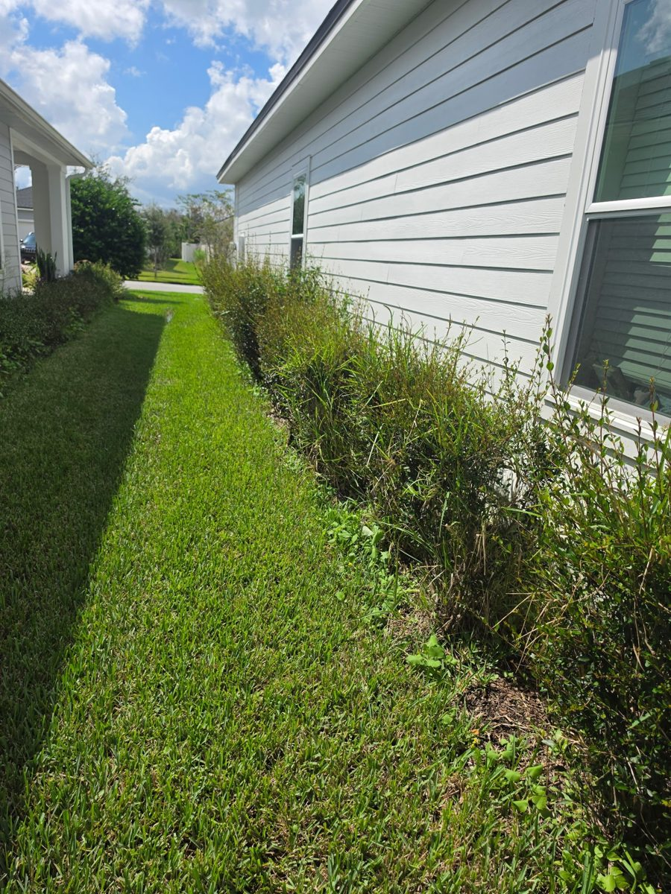
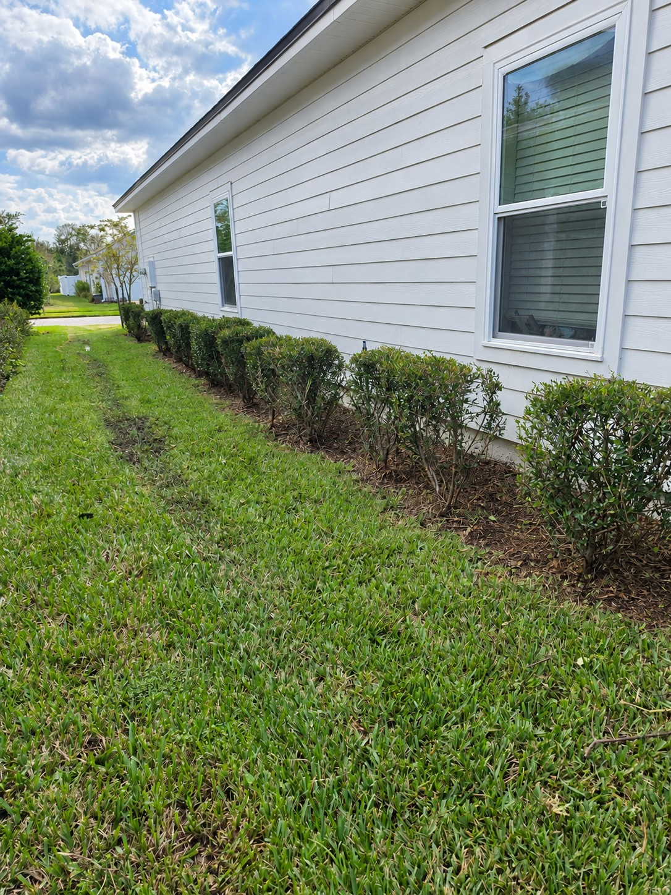
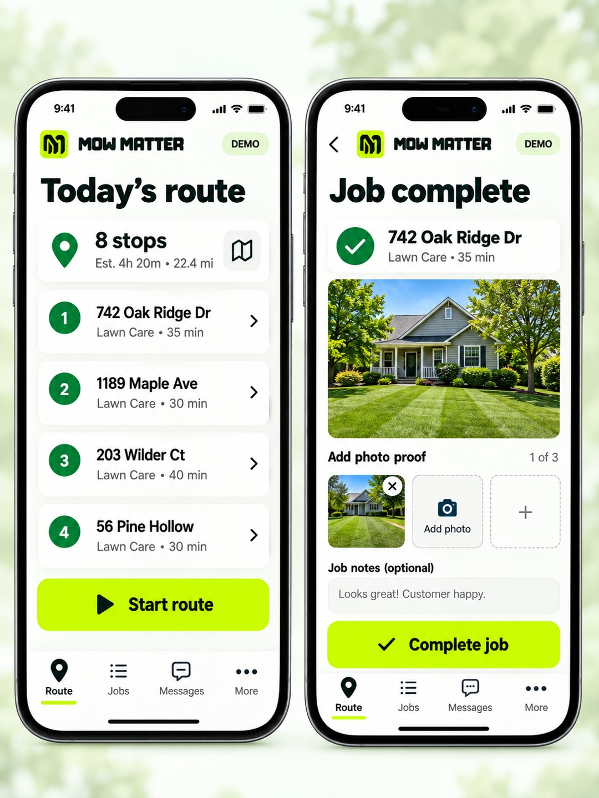
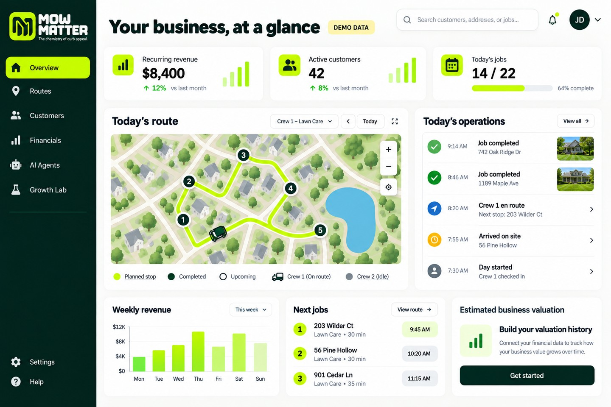

Weather + location
Review local rain, heat and nearby jobs before deciding when the work fits.
MOW MATTER INTELLIGENCE
Turn field photos, local weather and job location into better care conversations. Review the need, price the work and give customers a clear choice.
Optional photo analysis is an add-on; activation and live validation are still pending.
FROM OBSERVATION TO ACTION
Back into your business.Route planning · Scheduling · Customer history
THREE SIGNALS. ONE BETTER PLAN.
Review local rain, heat and nearby jobs before deciding when the work fits.
Compare the visit record. Optional AI can suggest plant categories and visible care needs for your review.
Use your rates and crew capacity to propose a relevant add-on, then plan the work after approval.
REAL FIRST-CUSTOMER TEST PHOTOS
These real service photos show the hedge trim and mowing. The after photo is AI-enhanced for presentation; the numbered flags demonstrate areas to review.
Care Tags put the plant category, care timing and service price in one easy-to-read label.
Read the care labels ↓
BEFORE · TALLER HEDGE GROWTH
AFTER · AI-ENHANCED + INSIGHT DEMOMORE USEFUL OFFERS. HAPPIER CUSTOMERS.
KNOWLEDGE FOR THE COMPANY
Plant identification informs the plan; it does not automatically prescribe a treatment.
GUIDANCE FOR THE HOMEOWNER
“Would you like us to maintain the hedge’s shape alongside your mowing visits? Our proposed hedge-trimming add-on is $50 per visit. We’ll confirm the scope and a suitable interval with you before adding it to your care plan.”
Sample offer only. Nothing is booked, renewed or charged from this example.
Set your own rates, packages and labor estimates.
THE INFORMATION COMES FULL CIRCLE
The agreed service informs the job, route, schedule and customer record. Keep the office and crew working from the same plan.
Capture the agreed service, price, instructions and expected labor. Keep the approval with the customer record.
Account for the property location, nearby stops and added work time before assigning the visit.
Review crew availability, recurring care frequency and weather guidance. Confirm any changed timing with the customer.
Connect the service history, job status, approved quote and payment records so the office and field share the next step.


Office and Crew interface previews use sample data and illustrate the intended workflow.
Photo analysis is an optional add-on with activation and usage allowances. Live validation is still pending. View plans and check availability before activating.
It can suggest likely categories from clear photos. Species, health concerns and treatments need professional verification; the Care Tags above show sample instructions and prices.
No. The owner reviews the scope and price, and the homeowner approves extra work. Weather guidance uses the National Weather Service; the automated feedback workflow still requires validation.
Crew uses a mobile website with browser location permission. Tracking can pause when the phone locks or the tab is suspended, so manual job updates remain available. Read the privacy policy.
YOUR KNOWLEDGE. A STRONGER BUSINESS.
Organize the work today. Explore optional AI tools as they become available.
SAME STOPS. A CLEARER PLAN.
Crossing back through the same area
Nearby stops grouped in sequence
Illustrative comparison, not a live route or measured savings. Live drive-time optimization is in development; owners review and publish dispatch changes.